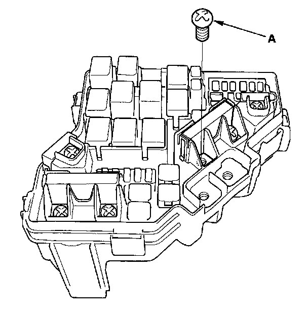
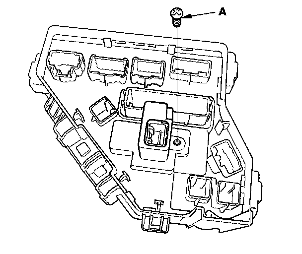
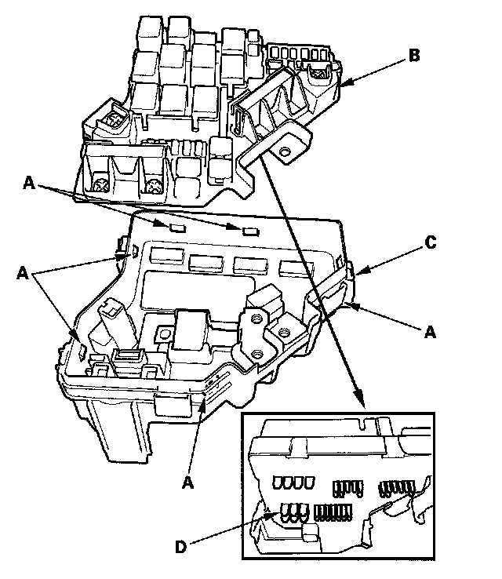
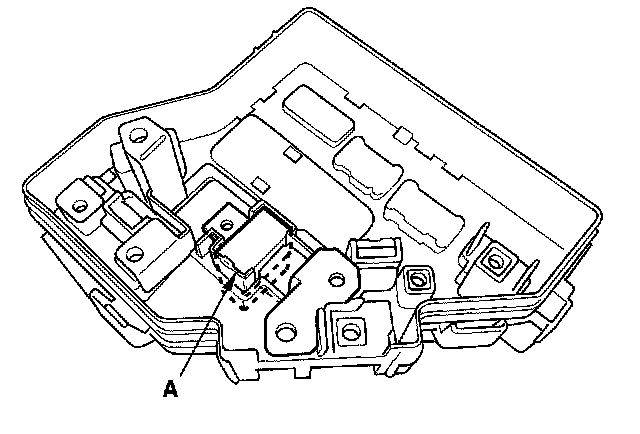

Electric Load Sensor: Service and Repair
ELD Replacement1. Remove the ECM.
2. Remove the under-hood fuse/relay box.

3. Remove the screw (A).

4. Turn the housing over, then remove the screw (A).

5. Turn the housing over again. Using two flat-tip screwdrivers, release the tabs (A), and pry up the fuse/relay box base (B) from the fuse/relay box housing (C).
NOTE: Make sure the terminals (D) are not bent or damaged.

6. Turn the housing over again, then remove the ELD (A).
7. Install the parts in the reverse order of removal.